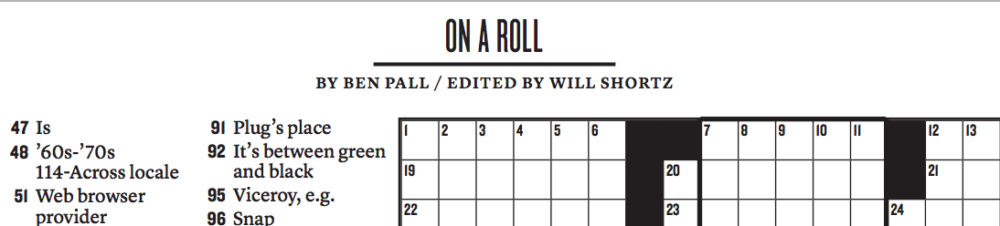

Bio
My name is Ben Pall. I am a Tufts student from New Jersey majoring in Human Factors Engineering and Computer Science. I am an aspiring UX designer, web developer, and game designer.
Born in 1995, I have always been interested in puzzles and problem solving. I have been making puzzles since I was 12. On November 23, 2009, at age 14, my first crossword puzzle was published in the New York Times. My sense of curiosity didn't stop there. I took my first computer science class in college in the spring of 2014 and instantly fell in love with the power of code.
Today, my goal to contribute to the movement to make technology easier and more fun for everyone. I chose my majors to build a skill set that will help me accomplish my goal.
